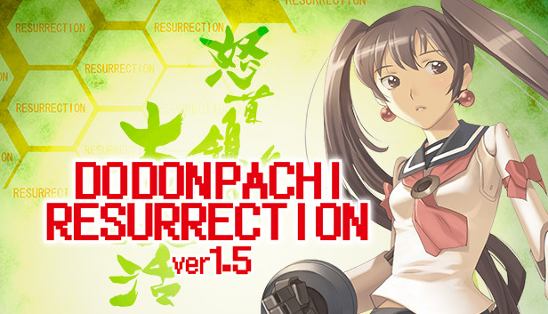
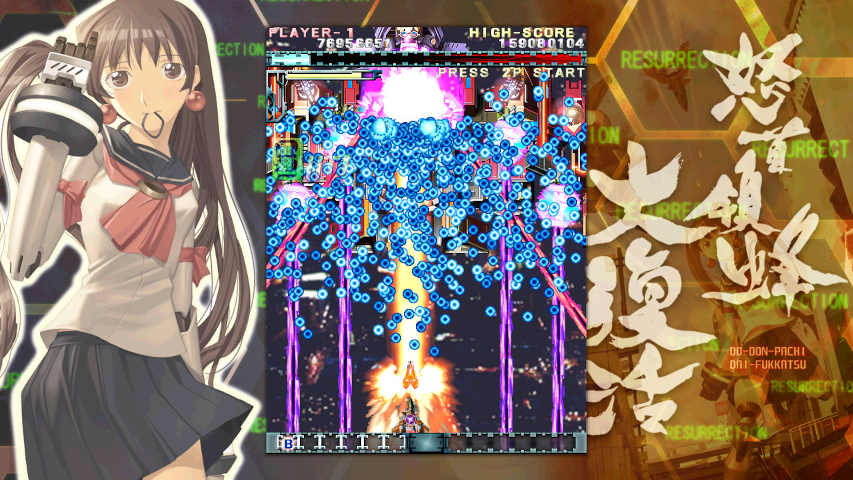
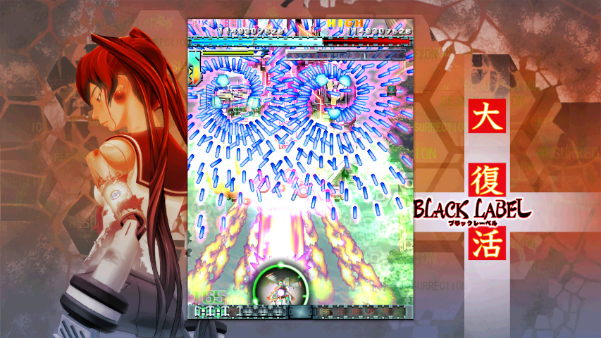

Description
DoDonPachi Resurrection is a mobile port of version 1.5 of DoDonPachi DaiFukkatsu, the fifth game in the 'bullet hell' vertically scrolling shooter series. The controls were adapted to touch by enabling firing by default. The player only needs to move the ship left or right to dodge bullets by sliding the index finger. So as not to obscure the view, there is some space near the bottom of the screen to move.
There are separate, virtual buttons to the side of the screen to switch between shooting modes that can be accessed with the thumb. The first one launches bullets across the entire screen and the second one uses a small, focused laser that can also push back enemies. Bombs to clear the entire screen can also be launched from there. The game supports three types of screen sizes that influence the visual presentation with in some cases black bars, but sharper graphics.
There are two game modes, with an exclusive one for the mobile version next to the original arcade mode. The arcade mode offers three ships with three offensive styles based on bomb use and alternate cannons. In the new mobile mode only a ship needs to chosen, no style. By scraping (dodging bullets but letting them pass through a close circular area surrounding the ship), an SM gauge in the upper right part of the screen fills the gauge towards the M side combined with building up a multiplier in the top left side of the screen. When the M side of the gauge is full the Hyper button can be hit to make the ship fire wildly and it can also be touched to change the firing direction. If the ship is spun a few times eventually the new Hyper Cannon weapon can be used to attack the entire screen with a powerful beam.
To have the S side of the gauge fill up a different tactic needs to be used. It fills up by killing enemies rapidly in succession. Once full the multiplier built up in the top left side is used for each enemy killed, leading to high scores. It is also possible to play as Hibachi after certain conditions. Next to the regular soundtrack it has a new soundtrack for the mobile version. There are multiple difficulty levels and hidden modes.
Screenshots
 Quote
When all is said and done, Cave has done a masterful job bringing DoDonPachi Resurrection to Steam. With its challenging gameplay (so long as you’re not a quarter-feeding chump), massive bosses, and incredibly deep mechanics, it certainly ranks as one of the finest shooters to grace the platform.
-- https://www.heypoorplayer.com/2016/10/12/dodonpachi-resurrection-review/